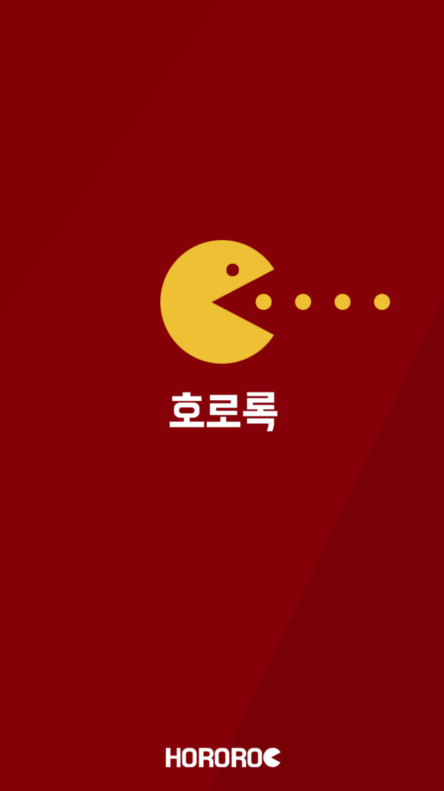

RPKIM (Jay Kim, Seoul)
romantic programmer kim
Hororoc
live a hand-to-mouth life in the company
INTRODUCE
호로록은 삼성전자 내의 임직원들의 '먹는다' 라는 행위와 관련된 경험을 그대로 서비스로 옮겨놓은 프로젝트이다.
임직원들은 보통 사내 식당을 이용하여 식사를 하거나 가끔 회사 주변의 음식점에서 식사를 한다. 또한 식사 후, 커피를 마신다. 이처럼, 임직원들이 '먹는다' 라는 행위와 관련된 경험들을 토대로 사내 식당의 메뉴를 보여주는 '사내호로록', 회사 주변의 음식점에 대한 정보를 주는 '사외호로록', 커피를 마실 때 사람들끼리 가볍게 함께 즐길 수 있는 게임 '복불복호로록'으로 구성된다.
SERVICE DESIGN METHOD
* User Centered Priority based Depth Tree Method
1. 임직원들의 경험 중 가장 많은 부분을 차지하는 '사내호로록'을 앱을 켜자마자 사용할 수 있도록 하며, 나머지 '사외호로록','복불복호로록'은 메뉴 버튼을 통해 제공한다.
* Hidden User Convenience Method
1. 아침에 앱을 실행하면 아침메뉴를, 점심에 앱을 실행하면 점심메뉴를, 저녁에 앱을 실행하면 저녁메뉴를 보여준다.
2. 좋아요 한 음식이 나오면, 맨 상단에 표시된다.
* Treated like an adult Method
1. 상단 메뉴에 아침/점심/저녁을 모두 표시 하지 않고, 현재의 메뉴만 보여주며, 좌우로 움직여서 나머지도 볼 수 있도록 한다.
2. 식당 변경 버튼을 간략하게 표현하며, 식당을 변경하고자 하는 사용자가 버튼을 찾게 되면 그 때에만 눈에 띌 수 있을 정도로만 보여준다.
* User Log Data based Agile Method
1. 호로록은 각 기능별 클릭 수, 서비스 가입자 수, 이용자 수에 대한 통계페이지를 운영하여, 사용자의 니즈를 파악하여 빠르게 대응한다.
WEBSITE
http://hororoc.me
MY ROLE
Database Modeling, API Server Development
Service Design, UI Design, UX Design
APP DESIGN
Original Version

Winter Edition